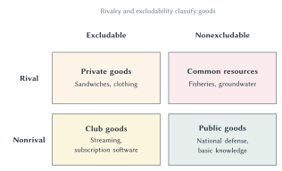

Chapter 11
Public Goods and Common Resources
Rivalry and excludability help explain why some valuable goods are underprovided, why some shared resources are overused, and how institutions can improve the outcome.

A sandwich, a streaming subscription, a fishery, and national defense are all goods in the broad economic sense: people value them, and resources are required to provide or preserve them. Yet they create very different economic problems.
If you want a sandwich, a restaurant can require payment before handing it to you. When you eat it, no one else can eat the same sandwich. A streaming service can also require payment, but millions of subscribers can watch the same program without using it up. Fish in an open ocean are different. It may be hard to keep boats away, but a fish caught by one boat is no longer available to another. National defense is different again. Protecting one resident does not usually reduce the protection available to another, and it is difficult to protect only the people who voluntarily paid.
These differences matter because markets work most directly when sellers can exclude nonbuyers and buyers bear the cost of what they use. When those links weaken, two opposite problems can appear. A valuable shared good may not be financed because people can benefit without paying. A scarce shared resource may be overused because each user receives the private benefit while shifting part of the cost to everyone else.
This chapter develops two simple questions that organize both problems. Does one person’s use leave less for others? Can nonpayers realistically be kept from using or benefiting from the good? Those questions are called rivalry and excludability. They help explain free riding, the tragedy of open access, and the institutions people create when ordinary buying and selling are not enough.
Rivalry And Excludability
A good is rival when one person’s use leaves less for others. A sandwich is rival because only one person can eat it. A gallon of groundwater pumped by one farmer is no longer underground for another farmer to pump. A seat in a full stadium is rival because giving the seat to one fan means another fan cannot occupy it.
A good is nonrival when one person’s use does not meaningfully reduce the amount available to others. One more student reading an online idea does not prevent another student from learning it. One more person receiving protection from a warning system does not use up the warning. Nonrival does not mean free to create. Producing a movie, building a warning system, or discovering new knowledge can be expensive. The point is that allowing another person to benefit may add little or no cost once the good exists.
The second question is about access. A good is excludable when a provider can realistically prevent nonpayers from using it. Restaurants can refuse to serve customers who do not pay. Streaming services use passwords and account controls. Toll roads use gates, license-plate readers, or electronic passes.
A good is nonexcludable when preventing nonpayers from benefiting is difficult or very costly. A ship can see a lighthouse beam without paying the lighthouse at that moment. Residents within a defended country benefit from national defense whether or not each person voluntarily contributes. Boats may enter a distant fishery when no one can effectively patrol it.
Quick Concept
Rivalry And Excludability
Rivalry asks whether one person’s use leaves less for others. Excludability asks whether nonpayers can realistically be prevented from using or benefiting from the good.
Ask the two questions separately. A good can be rival but difficult to exclude people from using. It can also be easy to exclude people even though one person’s use leaves plenty for everyone else. Combining the two questions produces the matrix in Figure 11.1.
Figure 11.1. Rivalry and excludability classify four types of goods. The two questions help predict whether ordinary market exchange works directly or whether free riding, congestion, or overuse may require another arrangement.
The Four Types Of Goods
The rival and excludable cell contains private goods. Food, clothing, furniture, and many ordinary services fit here. A seller can require payment, and the buyer receives the unit purchased. Use, payment, and cost are closely connected, so normal market prices can coordinate production and consumption relatively well.
The nonrival and excludable cell contains club goods. Streaming services and subscription software are familiar examples. The provider can control access even though adding another user may cost very little until capacity becomes strained. A private firm can often finance a club good by charging membership or subscription fees.
The rival and nonexcludable cell contains common resources, also called common-pool resources. Ocean fisheries, groundwater basins, grazing land without effective access rules, and crowded roads can fit here. One person’s use leaves less or worse access for others, but excluding users may be difficult. The central risk is overuse.
The nonrival and nonexcludable cell contains public goods. National defense, basic knowledge, some forms of disease surveillance, and an emergency warning can have these characteristics. One person’s benefit does not substantially reduce another’s, and excluding nonpayers is difficult. The central risk is underprovision because people can benefit without contributing.
Common Mistake
Public Good Does Not Mean Government-Provided Good
In economics, a public good is nonrival and nonexcludable. Governments provide many goods that are not public goods, and public goods can sometimes be supported by private, nonprofit, community, or mixed arrangements.
The matrix also connects directly to Chapter 10. A nonrival good has a useful marginal-cost interpretation. Once the good exists, the cost of serving one more person is often zero or close to zero. One more resident can receive a warning, view a lighthouse beam, or benefit from national defense without requiring another unit of the good.
That has a direct welfare implication. If another person values the good and can use it without increasing cost, allowing that person to benefit increases total surplus. The added benefit is positive while the added cost is zero. Efficient use therefore includes every additional user who values access once the good exists.
This conclusion concerns use after the good has been created. It does not mean the good was free to produce or that it should be created at any cost. A warning system, lighthouse, research discovery, or defense system may have a large fixed cost, and someone must still finance it.
If those additional users cannot be charged, their benefits spill beyond the person or organization that paid for the good. Public goods are therefore closely connected to positive externalities. A person who helps finance the good creates benefits for others that may not enter the private decision. The private incentive is then to provide too little.
Common resources reverse the logic. Another user takes or congests part of a rival resource while sharing the resulting cost with everyone else. That is a negative externality. The private incentive is then to use too much. Chapter 10’s underproduction and overproduction logic will guide both halves of this chapter.
Public Goods And Free Riding
Consider national defense. Once a country is protected, it is difficult to exclude a particular resident because that person refused to contribute voluntarily. The protection is also largely nonrival: protecting one resident does not normally subtract protection from another.
Now imagine that national defense had to be financed by a voluntary online contribution page. Many residents might genuinely value the protection. Yet each person could reason, “My payment is too small to determine whether the country is defended. If enough other people contribute, I receive the benefit anyway. I would rather keep my money.”
A free rider is someone who receives a benefit while letting others bear the cost. The free-rider problem appears when people can enjoy a shared benefit whether or not they contribute. The incentive does not require people to be unusually selfish or unaware of the good’s value. Even someone who strongly values the good may prefer that other people pay.
If many people follow that logic, voluntary contributions can fall short. A public good that costs less than the group’s total benefit may not be financed. The problem is not that nobody values the good. The problem is that nonexcludability separates receiving the benefit from paying for it.
Key Point
Free Riding Can Produce Too Little Of A Valuable Good
When people receive the benefit whether or not they contribute, each person has an incentive to let others pay. The group may value provision more than it costs even though voluntary contributions do not finance it.
Free riding is a collective action problem. The group may have a shared interest that is difficult to achieve through separate voluntary choices. Neighborhood flood control, disease monitoring, basic research, and national defense can all raise this problem at different scales.
The next step is to separate two questions that are easy to mix together. First, is the public good worth providing? Second, how will it be financed? The first is an efficiency question. The second is an institutional question.
When Is A Public Good Worth Providing?
Chapter 6 used willingness to pay to measure the value buyers place on a good. The same idea applies to public goods, but the addition works differently.
For a private good, Ava and Ben cannot consume the same sandwich. If each wants one, two sandwiches must be produced. For a nonrival public good, Ava, Ben, and Maya can all enjoy the same fireworks display. To measure the value of that shared display, add their willingness to pay for that same unit.
Suppose a small community is deciding whether to hold one or two fireworks displays. Each display costs $35.
| Shared Unit | Ava’s WTP | Ben’s WTP | Maya’s WTP | Total WTP | Cost | Efficient Choice |
|---|---|---|---|---|---|---|
| First display | $20 | $15 | $10 | $45 | $35 | Provide it. |
| Second display | $8 | $6 | $4 | $18 | $35 | Do not provide it. |
Table 11.1. Add willingness to pay across people for the same shared unit. The first display creates $45 of total benefit and costs $35, so it is worth providing. The second creates only $18 of total benefit and costs $35, so it is not.
The first display creates a net gain of $10. The second would destroy $17 of value because it costs more than the residents together are willing to pay. The efficient choice is therefore one display.
Notice what was added. We did not add three quantities. Ava, Ben, and Maya all consume the same display. We added how much each person values that shared unit.
This calculation identifies the efficient quantity. It does not solve the financing problem. Ava may value the first display at $20 and still hope that Ben and Maya pay the entire $35. Ben and Maya may think the same way. A display that passes the benefit-cost test can remain unfunded.
The distinction matters throughout public economics. Knowing that a bridge, warning system, research project, or defense program creates total benefits above its cost does not tell us how to collect the money, how much each person should pay, or how accurately officials can measure those benefits and costs.
Tax Finance And Free Riding
The willingness-to-pay calculation tells us whether the public good is worth providing. It does not tell us how to collect the money. Because people can receive the benefit whether or not they pay, voluntary contributions may fail even when the good is worth more than it costs.
Governments commonly respond by financing public goods through compulsory taxes. National defense could not be financed reliably if every resident could choose whether to pay while everyone still received the protection. Taxation removes the individual choice to free ride on payment, though government must still decide how much of the good to provide and control the cost of providing it.
Sideline
Free Riding And The State
A state is not a voluntary subscription service. It can require taxes, enforce its demands, and punish refusal. Why do societies accept an institution with that much power? One economic answer is that some essential shared goods cannot be financed reliably through voluntary contributions. If everyone waits for someone else to pay for national defense, a society may end up with too little defense or none when it matters most.
Compulsory taxation can turn a shared desire for protection into an actual defense system. But the authority that can overcome free riding can also be misused. Taxation does not reveal what government should provide or how much, and coercive power makes limits and accountability essential. Free riding helps explain one reason for the state; it does not justify every action the state takes.
Taxes are the usual response when a public good creates a serious free-rider problem. Occasionally, however, people find a clever way to connect payment to a transaction that can be observed. Coase’s lighthouse is the classic example.
Sideline
Coase’s Lighthouse
Lighthouses are often used as the classic example of a public good. A ship can see the light without paying at the moment it receives the warning. Ronald Coase studied the history of British lighthouses and found arrangements that included private construction or operation.1
But the system was not simply a donation box beside the sea. Light dues were legally supported and collected when ships entered ports. Ports supplied an observable payment point even though the light itself was hard to exclude ships from seeing. Later historical work has emphasized the public authority and legal privileges that supported these arrangements.2
Law did not make the lighthouse beam excludable. It made payment collectible somewhere else.
The lesson is not that every public good can be financed through unassisted voluntary exchange. It is that a practical payment point can sometimes work around free riding.
The lighthouse is a useful bridge to the next problem. When a good lacks an ordinary market price, officials and organizations must still decide how much it is worth.
Valuing Benefits Without Ordinary Market Prices
The fireworks example gave each person’s willingness to pay. Real public decisions are harder. A city cannot usually observe a market price for cleaner air, fewer flood deaths, or a safer highway. Without a price, how can decision-makers compare the benefit with the cost?
Economists look for evidence about trade-offs people make. Housing prices may reveal how much buyers value quieter neighborhoods or cleaner air. Wage differences can reveal how workers respond to job risks. Purchases of smoke detectors, safer cars, or other protections can reveal willingness to pay for small risk reductions. Surveys are sometimes used when behavior cannot provide enough information.
One important application is the value of a statistical life, increasingly described as the value of mortality-risk reduction. The name is easy to misunderstand. Economists are not asking for the price of saving an identifiable person from certain death. They are measuring how much many people are willing to pay for small reductions in their own risks.3
Sideline
“Priceless” Is Not A Decision Rule
Calling life priceless does not make the trade-off disappear. Money spent reducing one risk cannot also reduce another risk.
Suppose 100,000 people are each willing to pay $100 for a one-in-100,000 reduction in their annual risk of dying. The group’s total willingness to pay is $10 million. Across the entire group, the risk reduction amounts to one fewer expected death.
The $10 million is called the value of one statistical life in this example. It values 100,000 small risk reductions. It is not a price placed on any known person’s life.
Government agencies use this logic when evaluating safety, health, and environmental rules. Benefit-cost analysis can help compare risk-reduction benefits with the resources required to produce them. It remains one input into a policy decision alongside law, ethics, uncertainty, distribution, and implementation.4
The valuation problem reveals another limit of compulsory finance. Taxation can reduce free riding, but it does not automatically tell the government whether to provide one warning system or two, how safe a highway should be, or which research project creates the greatest value. Public provision still requires information about benefits and costs.
So far the chapter has examined goods that may be underprovided because people can benefit without paying. The other half of the matrix creates the opposite problem: too much use of a scarce shared resource.
Common Resources And Open Access
Imagine an ocean fishery open to any boat. A fishing crew catches one more fish and receives nearly all of the value from selling it. But the fish is no longer available to reproduce or to be caught by another boat. Part of the cost is spread across everyone who uses the fishery.
That gap creates a negative externality. The boat receives the benefit from another catch, but part of the cost falls on other fishers through a smaller future stock. Each boat compares the benefit of catching another fish with its own costs of fuel, labor, and equipment, not with the full cost imposed on everyone who uses the fishery.
Chapter 10 showed this same problem with a negative-externality graph. When decision-makers leave out part of the wider cost, the market can produce or extract too much.
Open access intensifies the incentive. A fisher who leaves a fish in the water may not benefit from that restraint if another boat catches it tomorrow. Even users who care about preserving the resource have a reason to harvest before someone else does. The result can be a race toward extraction.
Ecologist Garrett Hardin famously called this problem the tragedy of the commons.5 The phrase describes the danger that a rival resource will be depleted or congested when access is uncontrolled and each user receives the private benefit while sharing the wider cost.
The same logic can apply to groundwater. A farmer who pumps more water receives the crop benefit, while the falling water table raises pumping costs for neighboring farms. On a congested road, each driver receives the benefit of the trip but imposes a small delay on many other drivers. In a forest with weak enforcement, one logger receives the timber while others bear part of the lost future value.
Key Point
Open Access Is Not The Same As Governed Common Property
A rival resource with no effective access rules invites users to harvest before others do. A community-owned resource may instead have boundaries, monitoring, sanctions, and enforceable rules. Calling both arrangements “the commons” hides the institutional difference that matters.
The common-resource problem is not caused by sharing alone. It arises when the rules fail to connect current use with the wider cost. Whatever form the solution takes, it must reduce overuse.
Governing A Common Resource
The most direct solution is to establish property rights. An owner who can capture the future value of a fishery, forest, or herd has a reason to conserve it. Leaving part of the resource unused today can produce a larger benefit tomorrow. Property rights replace the race to take the resource first with an incentive to protect its future value.
Ownership does not make people more conservation-minded. It makes tomorrow’s fish, trees, or animals part of what they can gain or lose today.
Property rights are not simply given. They are institutions people create when the cost of open access becomes larger than the cost of defining and enforcing ownership.
Harold Demsetz argued that property rights tend to become more clearly defined when the gains from controlling an externality rise above the costs of creating and enforcing those rights. In his famous fur-trade example, more valuable fur-bearing animals made the losses from overhunting more important. Recognized family hunting territories and conservation practices therefore became more valuable too.6
This is a theory of pressure for institutional change, not a guarantee that efficient property rights appear automatically. People must still agree on boundaries, decide who receives the rights, monitor use, and enforce the rules.
But individual ownership is not always practical. Fish move across large bodies of water. Groundwater flows beneath many properties. Wildlife crosses boundaries. In these settings, defining and enforcing ownership can be difficult or extremely costly.
When property rights are not feasible, some other mechanism must still limit use. A quota can restrict the total catch. A season can restrict when harvesting occurs. A fee can make users face more of the scarcity cost. Government rules can restrict access or extraction. These approaches differ, but they all try to do the same basic thing: reduce use before the resource is depleted.
Sometimes the users themselves develop and enforce the limits. Repeated interaction and social trust can make cooperation easier, especially when people expect to keep using the resource together. But trust alone is not enough. The group still needs boundaries, rules, monitoring, and consequences for violations. This is where Elinor Ostrom’s work becomes important.
Elinor Ostrom And Governed Commons
For many years, discussions of common resources often appeared to offer two choices: divide the resource into private property or place it under centralized government control. Elinor Ostrom showed that the actual range of institutions is wider.
Ostrom studied irrigation systems, forests, fisheries, grazing lands, and other resources governed by the people who used them. Some communities developed durable rules without relying entirely on either individual private ownership or commands from a distant central authority.7
Historical Note
Economist Profile: Elinor Ostrom
Elinor Ostrom at the 2009 Nobel Prize press conference.8
Elinor Ostrom (1933-2012) spent much of her career studying how real people govern shared resources. Rather than assuming that common resources must always collapse, she examined which rules helped groups cooperate and which conditions made failure more likely.
Her work emphasized clear boundaries, rules suited to local conditions, monitoring by people accountable to users, penalties that become stronger for repeated violations, affordable ways to resolve disputes, and recognition of the group’s right to organize. These are not magic ingredients. They are ways to solve practical problems of information, incentives, trust, and enforcement.
Ostrom received the 2009 Nobel Memorial Prize in Economic Sciences for her analysis of economic governance, especially the commons. Her broader lesson was institutional diversity: markets, governments, firms, and communities can be combined in many ways, and performance must be studied rather than assumed.9
Ostrom’s work does not prove that communities always cooperate. Local groups can lack information, exclude outsiders unfairly, be captured by powerful members, or fail to enforce their own rules. A rule that works in a small irrigation system may not scale to an ocean or the global atmosphere.
The point is more modest and more useful. Open access is not the only form of shared resource use. When users can define boundaries, observe one another, adapt rules to local knowledge, impose credible consequences, and settle conflicts, common property can be governed rather than abandoned to a race for extraction.
Wildlife, Rights, And Conservation Incentives
Wildlife makes the role of institutions vivid. Americans wanted enormous quantities of beef, yet cattle did not disappear. Why did strong demand expand cattle herds while bison neared extinction? And why were cattle domesticated and privately raised while bison remained mostly wild?
Demand alone cannot answer those questions. Domestication and ownership developed together over long periods. Owners of cattle could control breeding and capture the future value of a larger herd. Lueck and Torrens describe domestication partly as a transition from weak rights over wild populations toward private ownership and owner-directed breeding.10
During the nineteenth century, bison herds were difficult for individual hunters to own and protect. A hunter who passed up an animal could not be sure that the animal, or its offspring, would remain available. A cattle owner who spared a breeding animal could profit from the future herd.
This incentive difference matters, but it is not a complete history. Railroads, hide markets, hunting technology, military policy, Indigenous dispossession, war, and later conservation law all affected the bison’s near-extermination and recovery. Dean Lueck’s property-rights analysis emphasizes that institutions helped shape both exploitation and conservation rather than attributing the outcome to demand alone.11
Namibia offers a different institutional experiment. Reforms allowed communal conservancies to receive conditional rights to wildlife use, tourism, and related revenue. Giving local communities a larger share of the benefit from living wildlife created a stronger reason to monitor and preserve it.12
The arrangement did not eliminate trade-offs. Wildlife can destroy crops, damage water infrastructure, threaten livestock, and endanger people. Tourism or hunting revenue may be distributed unevenly, and local rights may remain incomplete. Research on human-elephant conflict warns that broad conservation gains can coexist with costs concentrated on particular households.13
The shared lesson is not that private ownership always beats government control or community management. It is that preservation becomes more likely when people who decide how a resource is used have a continuing stake in its future value. Governance must also account for people who bear the cost of preserving that resource.
Match The Remedy To The Problem
Public goods and common resources create opposite problems. Public goods may be provided in too small a quantity because people can benefit without paying. Common resources may be used too heavily because each user receives the benefit while sharing part of the cost with others.
For common resources, begin with property rights. When ownership can be defined and enforced, an owner has a reason to preserve future value. When individual ownership is not feasible, the alternative rule still has to reduce use. A quota, fee, seasonal limit, or community rule matters only if people can understand it, monitor it, and enforce it.
Key Point
Solve The Actual Problem
Public goods require a way to finance provision. Common resources require a way to restrain use. An institution that does not accomplish that basic task has not solved the problem.
The Big Picture
Markets work most directly when the person who receives a good pays for it and bears the cost of using it. Rivalry and excludability tell us when those links may weaken.
Public goods are nonrival and nonexcludable. Because nonpayers can benefit, voluntary finance may produce too little even when the group’s total willingness to pay exceeds the cost. Adding willingness to pay across people for the same shared unit identifies efficient provision, but it does not solve the financing problem. Compulsory taxes are the usual response to free riding, while the lighthouse shows that a practical payment point can occasionally provide another route.
Common resources are rival and difficult to exclude people from using. Under open access, each user captures the benefit from another unit while shifting part of the depletion or congestion cost to others. The result can be overuse. Property rights are the most direct solution when they are feasible. When they are not, enforceable limits or community rules must still reduce use.
The matrix is therefore the beginning of the analysis, not the end. Every solution requires information, monitoring, enforcement, and some way to handle conflict. The economic habit is to diagnose the broken link and compare realistic institutions that might repair it.
Chapter Study Map
Core Ideas
- Rivalry: one person’s use leaves less for others.
- Excludability: nonpayers can realistically be prevented from using or benefiting from the good.
- Private good: rival and excludable.
- Club good: nonrival and excludable.
- Common resource: rival and nonexcludable.
- Public good: nonrival and nonexcludable.
- Nonrival use and welfare: once a nonrival good exists, access by another person who values it raises total surplus when the added cost is zero.
- Public goods and positive externalities: those added benefits can spill to people who did not pay.
- Common resources and negative externalities: another user’s extraction or congestion leaves less for others while spreading part of the cost across the group.
- Free riding: receiving a shared benefit while hoping others bear the cost.
- Efficient public-good provision: add willingness to pay across people for the same shared unit and compare the total with its cost.
- Open access: no effective rule limits who may use a rival resource or how much they may take.
- Evolution of property rights: defining and enforcing rights becomes more attractive when the gains from controlling open-access losses exceed the costs of creating those rights.
- Governed common property: shared use with boundaries, rules, monitoring, and enforcement.
Figure And Table
- Figure 11.1: classify a good by asking rivalry and excludability separately.
- Table 11.1: add willingness to pay for the same shared unit; do not add quantities.
Reasoning Tasks
- Classify an unfamiliar good by asking separately whether it is rival and excludable.
- Explain why public goods resemble positive externalities and common-resource use resembles a negative externality.
- Separate whether a public good is worth providing from how it will be financed.
- Explain why free riding can occur even when people value the good.
- Identify the private benefit and the cost shifted to other users under open access.
- Explain why property rights can reduce overuse and why other enforceable limits may be needed when ownership is not feasible.
Common Mistakes
- Calling any government-provided or socially desirable item a public good.
- Thinking nonrival means costless to produce.
- Adding quantities instead of willingness to pay for the same public-good unit.
- Treating an efficient provision calculation as a financing plan.
- Saying free riding proves nobody values the good.
- Treating open access and governed common property as the same arrangement.
- Assuming demand alone explains wildlife decline.
- Treating taxes, private property, public regulation, or community governance as an automatic solution.
- Describing the value of a statistical life as the price of an identifiable person’s life.
Practice Tools
Use the review and reasoning questions below to practice classification, shared-benefit calculations, free-rider logic, and institutional comparison. No companion applet is required for the first edition.
Enrichment
The lighthouse, mortality-risk valuation, wildlife cases, and Ostrom profile deepen the chapter’s institutional logic. Learn the mechanism in each case rather than memorizing historical detail.
Review Questions
- What does it mean for a good to be rival?
- What does it mean for a good to be excludable?
- Give one example of a rival good and explain why it is rival.
- Give one example of a nonexcludable good and explain why exclusion is difficult.
- Name and define the four types of goods in Figure 11.1.
- Why is a public good not the same thing as a government-provided good?
- Once a nonrival good exists, what is usually true about the marginal cost of serving one more person, and what does that imply for total surplus?
- Why are public goods closely connected to positive externalities?
- What is a free rider?
- Why can free riding cause a valuable public good to be underprovided?
- For a shared public-good unit, what values should be added across people?
- In Table 11.1, why is one fireworks display efficient but two are not?
- Why does the efficient quantity not solve the financing problem?
- How can compulsory taxation reduce free riding?
- What does the lighthouse case teach about payment points and institutions?
- What does the value of a statistical life actually measure?
- Why does use of an open-access common resource create a negative externality?
- Why is open access different from governed common property?
- According to Demsetz, when are property rights more likely to become clearly defined?
- Why can property rights reduce common-resource overuse, and why are they sometimes difficult to establish?
- Why does demand for an animal product not by itself explain extinction?
- What was Ostrom’s central lesson about governing shared resources?
Economic Reasoning Questions
- An emergency warning system has already been built. Explain why serving one more resident costs almost nothing and why the system can create a positive externality.
- A digital course costs a great deal to create but almost nothing to provide to another subscriber. Is it rival? Is it excludable? Explain.
- Three households value a flood-warning siren at $40, $30, and $20. The siren costs $75. Is provision efficient? Why might voluntary contributions still fail?
- Suppose the cost of the first fireworks display in Table 11.1 rises to $50. What is the efficient choice? Does that answer determine how the cost should be divided?
- A ship can see a lighthouse without paying, but light dues are collected when it enters port. Explain how the port changes the financing problem.
- A town requires every resident to pay for mosquito control. Which problem does compulsory payment address, and which information problem remains?
- Ten thousand people each pay $50 for a one-in-10,000 reduction in annual mortality risk. Calculate the group’s total willingness to pay and the expected reduction in deaths. Explain what the result does not mean.
- In an open-access fishery, identify the private benefit from catching one more fish and the cost shifted to others.
- A government sets a catch quota but cannot observe catches at sea. Explain why naming the correct rule is not enough.
- A village forest has clear membership, visible use, locally accepted rules, and escalating penalties for repeated violations. Explain how each feature can reduce overuse.
- A wildlife program gives a community tourism revenue while elephants damage the crops of a few nearby households. Explain why the program may improve conservation and still face a serious governance problem.
- Someone says, “The bison disappeared because people wanted hides.” Use the cattle comparison to identify what that explanation leaves out.
- Why might individual property rights be difficult to establish for a groundwater basin? Name one rule that could reduce pumping instead.